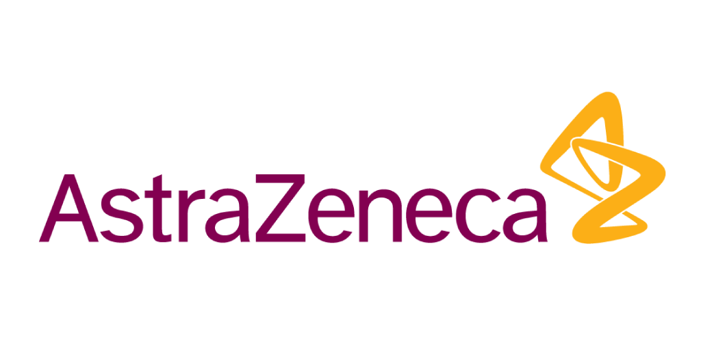

Demand to Profit
Explore the connections across eight finance towers.
Assembling your anatomy…
As-Is processes
Finance tower
Process overview
Manual processes As Is—%
Activity mix
AutomatedSemiManual

Explore the connections across eight finance towers.
Assembling your anatomy…
Process overview